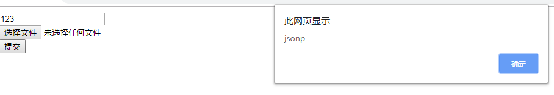
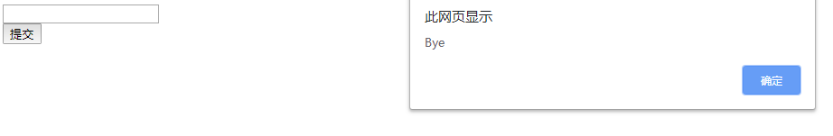

跨域
跨域有三个条件，满足任何一个条件就是跨域
1：服务器端口不一致
2：协议不一致
3：域名不一致
解决方案：
1.jsonp
在前台通过动态添加script标签及src属性，表面看上去与ajax极为相似，但是，这和ajax并没有任何关系；为了便于使用及交流，逐渐形成了一中非正式传输协议，人们把它称作 jsonp 。
代码如下：
html：
1 var http = require('http');
2 var url = require('url');
3 var server = http.createServer();
4 server.listen('8888',function(){
5 console.log('8888');
6 });
7 server.on('request',function(req,res){
8 var urls = url.parse(req.url,true);
9 if(urls.pathname == '/kuayu'){
10 res.end('callback("jsonp")');//返回的数据需是前端定义的函数调用的形式
11 }
12 });运行结果：

总结一下：
cors跨域的核心点是在服务端代码中设置一个响应头即可
res.setHeader('Access-Control-Allow-Origin','*');
html：
<body>
<form action="/" method="post" enctype="multipart/form-data" id="form">
<input type="text" name="xinxi" id="info"><br>
<input type="button" value="提交" name="submit" id="btn">
</form>
</body>
<script src="./jquery.js"></script>
<script>
$('#btn').on('click', function () {
$.ajax({
url: 'http://soul:8888/kuayu',
type:'delete',
async:false,
success: function (data) {
alert(data);
},
})
})
</script>
js代码：
var http = require('http');
var url = require('url');
var server = http.createServer();
server.listen('8888',function(){
console.log('8888');
});
server.on('request',function(req,res){
// 允许所有请求域
// res.setHeader('Access-Control-Allow-Origin','*');
// 只允许具体的一个域进行数据共享
// res.setHeader('Access-Control-Allow-Origin','http://127.0.0.1:8000');
var urls = url.parse(req.url,true);
res.setHeader('Access-Control-Allow-Origin','*');
if(req.method == 'POST' || req.method == 'GET'){
if(urls.pathname == '/kuayu'){
res.end('hello,world');
}
// 客户端发送预先检查请求，响应会客户端，
}else if(req.method == 'OPTIONS'){
res.setHeader('Access-Control-Allow-Methods', 'DELETE');//设置所允许的真是请求（delete，put等）
res.end('');
// 客户端发送真实请求，响应数据
}else if(req.method == 'DELETE'){
res.end('Bye');
}
});
效果：

很多人也认为使用CORS解决跨域很简单，只需要在服务器添加响应头 “ Access-Control-Allow-Origin ：* ” 就可以了，
其实不然，因为在CORS中，所有的跨域请求被分为了两种类型，一种是简单请求，一种是复杂请求 (严格来说应该叫‘需预检请求’)；简单请求与普通的ajax请求无异；但复杂请求，必须在正式发送请求前先发送一个OPTIONS方法的请求已得到服务器的同意，若没有得到服务器的同意，浏览器不会发送正式请求；
满足以下所有条件，被视为简单类型的请求：
1：请求方法必须是 GET、HEAD、POST中的一种，其他方法不行；
2：请求头类型只能是 Accept、Accept-Language、Content-Language、Content-Type，添加其他额外请求头不行；
3：请求头 Content-Type 如果有，值只能是 text/plain、multipart/form-data、application/x-www-form-urlencoded 中的一种，其他值不行；
4：请求中的任意 XMLHttpRequestUpload 对象均没有注册任何事件监听器；
5：请求中没有使用 ReadableStream 对象。（以上摘自西岭老湿微信公众号）
总结一下：
如果请求方式为get和post简单请求，则只需要设置响应头：res.setHeader('Access-Control-Allow-Origin','*');来允许某一个域 或者 所有域进行数据共享；
若是其他方式的请求，会在发送真正的请求之前发送一个options请求，通过options请求里设置：res.setHeader('Access-Control-Allow-Methods', 'DELETE')，
告知服务器正式请求会使用哪一种 HTTP 请求方法。